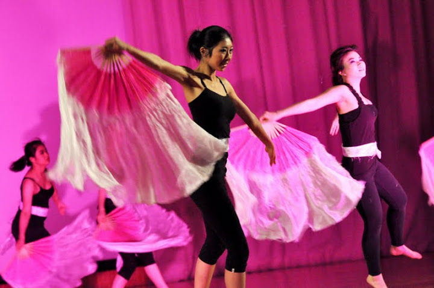
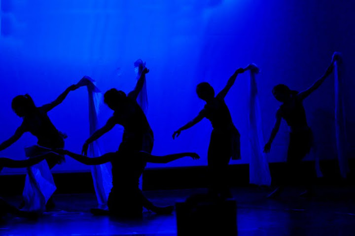
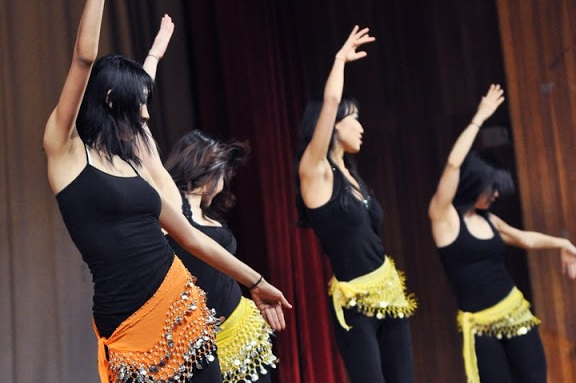
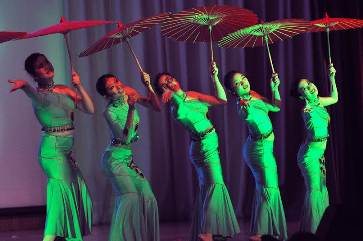
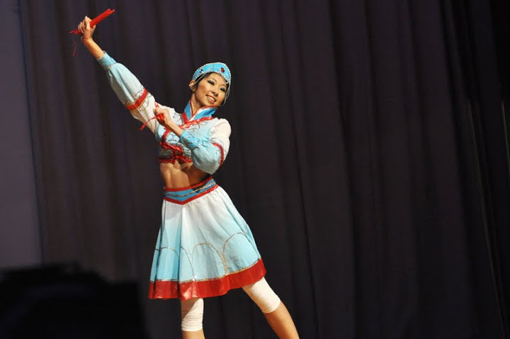
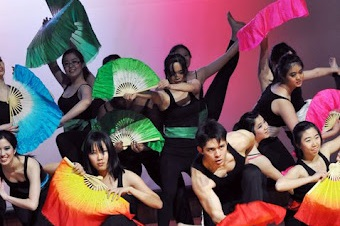

Inspirasian - 2011
Spring 2011 was the inaugural year of Inspirasian, the annual Boston Asian Performing Arts Festival. As the hosts, the MIT Asian Dance Team was responsible for the brilliant opening and closing pieces, along with quite a few others sprinkled in-between. Joining us were many of Boston's finest dance and music groups, from Dance Revelasian, a semi-professional Chinese dance troupe, to MIT's very own Syncopasian acappella group. Hover over the photos below for more information about ADT's pieces!
The Elements suite was a collaboration between four of ADT's choreographers - Cynthia Lu '12 (Earth), Yiling Chen '13 (Air), Jocelyn Lu '12 (Water), and Vivian Lee '12 (Fire). Drawing from a variety of styles and specialities, ADT was able to present a breathtaking opening piece filled with colour and extravagance. All of the Elements performers came together at the end of the show to perform "Unity", in which each of the elements were showcased and brought together for a whirlwind-like dramatic expose.
Click to see the photos and the performance videos!
 |
 |  |
| Elements - Earth | Elements - Air | Elements - Water |
 |
 |  |
| Elements - Fire | Dancing Diva | Red is Red, Green is Green |
|  |  | |
| I Come From the Grassland | Elements - Unity |
Photography courtesy of Kojo Acquah and Joseph Lee
Previous Showcases
Click on the images below to learn more about our other showcases! Feel free to also browse our photo gallery and performance videos!
 |
 |
 |
| Inspirasian | Limitless | Inspirasian |
| Spring 2013 | Fall 2012 | Spring 2012 |
 |
 |
 |
| Unforgettable | Inspirasian | Resonant Blue |
| Fall 2011 | Spring 2011 | Fall 2010 |
 |
||
| Phoenix Rising | ||
| Spring 2010 |